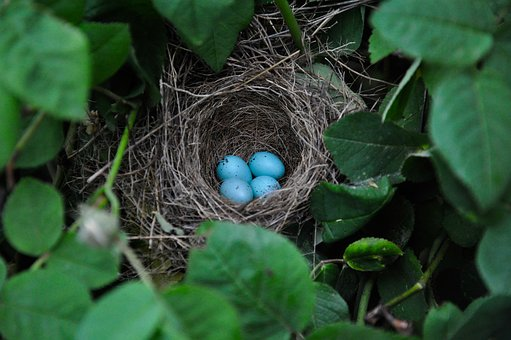

Aluksi
Aloitin Haaga-Heliassa opiskelun tammikuussa 2019. Olen nykyiseltä
ammatiltani toimintaterapeutti ja vaihdan
siis täysin alaa. Nykyinen työni on hyvin ihmisläheistä. Vaikka digitaalinen tietotekniikka on yleistymässä omassakin työssäni, työyhteisö ei ole kovin
vastaanottavainen muutoksille. Jo käytössä olevia digitaalisia ratkaisuja kuten sähköistä
potilastietojärjestelmää ja työajanseurantajärjestelmää ei hyödynnetä tarpeeksi monipuolisesti. ICT- ja
liiketoiminnan orientaatio –kurssin jälkeen ajatus digitalisaation tarpeesta omalla alalla vahvistui ja sain
paljon uusia näkökulmia. Uskon, että tältäkin kurssilta saan paljon ideoita ja ajatuksia tietotekniikan
hyödyntämisestä.
Kun meille opintojen aloitusillassa esiteltiin eri suuntautumisvaihtoehtoja, profiileja, minulla särähti korvaan digipalvelujen kuvaus. Digitaaliset palvelut on haastava määrittää ja työnkuva on haastavaa määrittää tarkasti, mutta digipalvelujen osaajia tarvitaan. Tästä jäi epäilys profiilia kohtaan. Kun olen työelämässä, haluan että työnkuvani on hyvin määritelty ja minulla on selkeä ymmärrys, miksi teen työtäni.
Tämä luo omalle työlle merkityksen ja tukee ammatillista kasvua ja oppimista. Toivon, että tämä kurssi muuttaa käsitystäni. Digitaalisten palvelujen sisältö kuulostaa nimittäin ihan mielenkiintoiselta.
26.3. Johdatus digitalisaatioon
Kurssi alkoi. Heti ensimmäisellä tunnilla meille tuli puhumaan Niklas Syyli IBM:stä. Hän kertoi työstään ja edustamastaan yrityksestä. Esitys oli mielenkiintoinen ja loi hyvän pohjustuksen digipalvelujen ymmärtämiselle.
Saimme ensimmäisen ryhmätyön: videon tekeminen digitrendeistä. Meidän ryhmän aiheeksi valikoitui Internet of Things. Ryhmäläiseni olivat tuttuja toiselta kurssilta, joten työnjako ja sopiminen sujui hyvin.
Yhtenä suurimapna kurssitehtävänä on pitää oppimispäiväkirjaa. Päiväkirja ei ole kuitenkaan tavallisessa muodossa, vaan on koodattava nettisivu, jossa on vähintään seitsemän päiväkirjamerkintää. Seuraavalla tunnilla koodataan, jolloin varmaan saan päiväkirjan alulle.
Tavoitteeni tälle kurssille on ymmärtää digitalisaation hyödyt ja mahdollisuudet sekä oppia css- ja html-
koodausta. Toivon, että digipalvelut tukevat ohjelmistotuotannon profiilia, joka kiinnostaa minua eniten
tällä hetkellä. Toivon myös saavani käsityksen, mitä digipalvelut voisivat olla työnä; minkälaisia työtehtäviä ja
minälaisissa yrityksissä.
2.4. Html & css - perusteet
Tänään pääsimme minua erityisesti kiinnostavaan asiaan eli koodaukseen. Aloimme rakentaa nettisivua.
Aloitimme css- ja html-perusteista. Olin tyytyväinen, että olin käynyt ohjelmistotuotannon
orientaatiokurssin jo aikaisemmin, niin minulla oli jonkinlainen käsitys asiasta. Lähdimme liikkeelle alkeista,
mutta etenimme melko vauhdikkaasti. Pohdin, miten hyvin ehdin sisäistämään kaikki asiat tämän kurssin
aikana. Lähiopetustunteja on joka viikko, mutta aikaa ei silti ole kovin paljon.
Loimme aluksi sivun rungon (head and body), ja lisäsimme erilaisia osia kuten kuvia ja linkkejä, ja teimme
muotoiluja tekstin väriin ja kokoon käyttöliittymän miellyttävyyden parantamiseksi. Nettisivuja tehdessä on
oltava visuaalista silmää. Toisaalta on otettava huomioon paljon asioita sivun asettelussa, että kaikki
oleellinen tieto löytyy helposti. Itsekin vihaan raskaita sivustoja, joilta on vaikea löytää haluamaansa tietoa.
Toisaalta nyt ymmärrän, miten helposti sivu voi muuttua raskaaksi, kun sinne yrittää saada mahdollisimman
paljon tietoa.
Videon tekeminen onnistui ryhmässä hyvin. Jaoimme työtehtävät selkeästi ja kaikki hoitivat oman
osuutensa. Onneksi ryhmä oli toimiva – tämä on hyvin tärkeää erityisesti monimuoto-opiskelussa, kun
opiskelun lisäksi arki täyttyy paljon muustakin ja ryhmätyön tekemiseksi voi olla haastavaa sopia yhteisiä
aikoja monen ryhmäläisen kesken. Aiheesta IoT löytyi paljon tietoa tutkimuksista mielipiteisiin. Aiheesta oli
kiva lukea ja huomata, miten näkyvä asia on omassa arjessakin.
9.4. Käyttäjäkokemus
Tällä tunnilla Exovesta työntekijä oli pitämässä meille alustuksen digitaalisen liiketoiminnan kehittämisestä ja muotoiluajattelun toteuttamisesta siinä. Hän jakoi suunnitteluprosessin vaiheisiin: ymmärtäminen, ideointi, kehittäminen, testaus ja toteutus.
Kehittämis-vaiheesta on tärkeää hypätä ajoissa testausvaiheeseen, jotta mahdolliset virheet huomataan ja voidaan palata kehittämiseen uusin silmin. Alustuksen jälkeen saimme toimeksiannon Sydänliitolta. Sydänliitolla on tavoitteena saada lisää jäseniä ja toimijoita
parantamalla jäseneksi liittymisen polkua. Tehtävänämme on ryhmissä luoda prototyyppi toimivammasta käyttäjäpolusta jäseneksi liittymiseksi. Opettajamme periaate "Mitään ei tehdä pöytälaatikkoon" tuntui aluksi hurjalta, koska kyseessä on orientaatiokurssi,
mutta kun asiaa pureskeli ryhmässä, projekti alkoi innostaa. Ja toisaalta on varmasti mielekkäämpää, kun on aito case eikä keksitty. Kotiläksyksi tuli käyttäjäymmärryksen luominen projektia varten. Tehtävässä on kohdattava yksi potentiaalinen Sydänliiton jäsen ja luotava ymmärrystä tämän tarpeista.
Sain kotiläksyyn haastateltavaksi mieheni 31-vuotiaan ystävän, jonka suvussa on esiintynyt paljon sydänvaivoja. Kyselin häneltä ensin taustatiejoa, jonka jälkeen pyysin häntä menemään Sydänliiton sivuille ja liittymään jäseneksi. Oli haastavaa olla neuvomatta häntä,
kun hän ei mainannut löytää liittymislomaketta. Tästä sain kuitenkin arvokasta tietoa liittymispolun hankaluudesta. Hän kommentoi sivustoa "ankeaksi" ja "vanhoille ihmisille suunnatuksi". Ylipäänsä sivusto oli "sekava" ja "tungettu täyteen kaikkea, järjestys puuttuu". Kirjasin huomioita ylös projektiamme
varten. Kuvasin nykyisen käyttäjäpolun piirtämällä Wordiin kaavion sekä selittämällä sen auki. Kirjasin tiedostoon myös saamani tiedon käyttäjän tarpeesta. Tämä auttoi hahmottamaan paremmin, mihin meidän on projektissamme keskityttävä. Oli myös hyvä huomata,
että haastateltavani ajatukset poikkesivat osin minun sivustosta tekemistäni huomioista. Jos olisin haastatellut vaikka kolmea henkilöä ja laittanut päälle vielä omat ajatukseni, olisin varmasti saanut entistä monipuoloisemman kattauksen käyttäjätarpeista.
Sovimme ryhmäläisten kanssa, että teemme mahdollisimman paljon etätyönä Drivea hyödyntäen. Keräisimme tietoa Sydänliitosta ja ideoita. Olimme sopineet, että
valitsemme kohderyhmäksi huolestuneen suuren yleisön, johon kuuluu myös nuorempia, noin 30-vuotiaista ylöspäin. Tätä kohderyhmää olisi innostettava liittymään
Sydänliittoon ja kiinnostumaan sydänterveydestä. Tällä hetkellä Sydänliitto vaikuttaa kantavan viestiä sydänsairauksista. Me haluamme viestin muuttuvan sydänterveydestä kertovaksi.
16.4. Html ja css - layout
Tällä tunnilla koodaus jatkui. Tykkäsin. Mietin, että yllättävän vähän on koodausharjoittelua koko kurssilla, kun yhtenä suurimpana kurssitehtävänä on luoda nettisivu, johon oppimispäiväkirja kirjoitetaan. Toki on myös itse opittava etsimään tietoa ja selvittämään, miten jokin asia
tehdään. Onhan netti pullollaan erilaisia koodaussivustoja, joista voi hakea koodausohjeita ja kopioida yksittäisiä tageja sun muuta. Paneuduimme tällä tunnilla eriyisesti nettisivun ulkoasuun eli miten liitetään esimerkiksi taustakuvia ja bannerikuvia sekä tutustuimme css-tiedoston liittämiseen HTML-tiedostoon, jotta
css-tiedostossa voi pitää suurimman osan muotoiluista. Ohjelmointikurssilla opettaja sanoi, että paras tapa oppia koodaamaan on koodata ja paras tapa harjoitella koodaamista on ottaa mallia toisen koodaamisesta. Varmasti totta ja trendi vaikutti olevan sama tälläkin kurssilla. Silti toivoisin, että teoriaa käytäisiin perusteellisemmin läpi. On kuitenkin eri asia osata koodata jotain ja
todella ymmärtää jotakin koodauskieltä.
Nettisivun tekeminen ei ole niin helppoa kuin äkkiseltään voisi luulla. Tai haasteita ei ole pelkästään siinä, ettei ole kokemusta html- ja css-koodauksesta.
Sivun luominen vaatii myös visuaalista silmää. Siitä ei ole helppo saada miellyttävän ja nätin näköistä. Jo värien valitseminen on oma hommansa. Lisäksi vaikka
tietäisikin, mitä muotoja tai minkälaisia kuvanasetteluja haluaisi, on haastavaa löytää tietoa, miten juuri ne koodataan. Internet on täynnä ohjeita, mutta pitäisi keksiä ja tietää aina
oikeat hakusanat. Kirjastosta laitoin varaukseen opetuskirjan: HTML & CSS: design and build websites. Katsotaan, josko siitä olisi hyötyä. Kunhan saisin selkeät ohjeet komennoista, mitä on mihinkin
käytettävä. Mielellään katagorisoituna järkevästi.
23.4. Konseptointi
Tällä tunnilla pohdittiin konseptointia. Kävimme läpi kolme konseptoinnin työkalua ja opettelimme käyttämään niitä:
Empathy map (ymmärrys käyttäjästä), Persona (kohderyhmä) ja Value proposition canvas. Empathy map on nelikenttä, jonka keskellä on käyttäjä. Menetelmän avulla selvitetään, mitä käyttäjä sanoo ääneen ja toisaalta mitä ei sano ääneen,
mitä nonverbaalista viestintää on havaittavissa. Selvitetään myös, mitä käyttäjä näkyy tekevän sekä näkyy ja kuuluu tuntevan. Näiden pohjalta luodaan käyttäjäymmärrys.
Persona kuvastaa yhtä tiettyä käyttäjäryhmää. Luonnehdittuja käyttäjäryhmiä voi olla monia. Sydänliitto on luonnehtinut kymmenkunta eri käyttäjätyyppiä, joista me valitsimme meidän tarkoituksiimme sopivimmaksi Teemun. Teemu kuvastaa suurta yleisöä, joka on huolestunut terveydestään ja pyrkii välillä etsimään tietoa esimerkiksi sydänsairauksista, mutta
ei ole vielä täysin valmis muuttamaan elintapojaan. Hän ei tunne kuuluvansa kohderyhmään, koska pitää itseään liian nuorena siihen. Me näemme, että Sydänlliton olisi uudistettava sivustoaan nuoremmille sopivammaksi ja raikkaammaksi. Nyt sivusto viestittää sairautta ja ahdistusta siihen liittyen. Olisi tärkeää keskittyä ennalta ehkäisyyn: miten sydänsairauksia voi ehkäistä.
Value proposition canvas -menetelmää mainostettiin tehokkaimpana ja monipuolisimpana menetelmänä näistä kolmesta. Se oli vähän laajempi ja sisälsi useamman vaiheen. Ensin oli määriteltävä käyttäjäryhmä - meillä ei vielä sairastunut mutta huolestunut Teemu. Seuraavaksi oli pohdittava, mitä
käyttäjäryhmä pyrkii tekemään - Teemu seuraa uutisia terveydestä arjessaan käyttämiään kanavia pitkin, mutta ei ole valmis varsinaisesti etsimään tietoa. Tämän jälkeen pohdittiin, mitä tuskaa tekemiseen liittyy ja mikä on toisaalta hyvin. Teemu muuttuu huolestuneemmaksi, kun lukee uutisista sydänsairauksiin liittyviä asioita. Koska hän ei itse aktiivisesti etsi tietoa, hän alkaa helposti
muodostaa omia käsityksiä kuulemansa pohjalta ja tekee tarpeettomia yhteenvetoa, mikä lisää huolta omasta terveydestä. Toisaalta Teemu saa koko ajan vähän lisää motivaatiota tehdä jotain terveytensä eteen. Viimeiseksi oli pohdittava, miten tuskaa voi vähentää ja positiivista vahvistaa, sekä miten voisimme pööliä ja parastaa. Pohdimme, mitä ratkaisut voisivat olla meidän käyttäjäryhmämme kohdalla.
Olimme päättäneet, että keskitymme Sydänliiton mobiilisovellukseen, joka on tällä hetkellä kehnohko. Ulkoasu ei ole kovin houkutteleva ja sisältö on hyvin sairauspainotteista.
Tuomme uutta raikasta ilmettä mobiilisovellukseen, mikä innostaa potentiaalisia käyttäjiä liittymään liittoonkin.
Kotitehtäväksi tuli kuvata toimeksiantoon vastaava paranneltu käyttäjäpolku tarpeen heräämisestä sen täyttymiseen ja katsoa kolme protoiluvideota Moodlesta. Käyttäjäpolku oli helppo kuvata, kun siitä oli kokemus jo aikaisemmin ja nyt oli paljon pureskeltua tietoa. Protoiluvideot antoivat vähän osviittaa, mitä protoilu merkitsee ja mitä se pitää sisällään.
30.4. Protoilu

Vappuaatto. Haaga-Helian virallinen kanta oli, että vappuaattona ei ole iltaopetusta. Kysyin tätä tammikuussa ja varasin Ranskan matkan. Tämä kurssi päätti kuitenkin tehdä poikkeuksen. Tutustuin etukäteen protoiluun ja opettelin itsenäisesti käyttämään Marvelia. Harjoittelin myös koodaamaan itse lomakkeen, mikä osoittautui ihan hauskaksi. Pitäisi kehitellä enemmän jotain omia projekteja,
vaikka pieniäkin. Silloin olisi helppo saada motivaatio työskentelyyn ja oppimisesta tulisi hauskaa. Pohdin myös, että pitäisi alkaa etsiä oman alan töitä. Luin yhden opinnäytetyön , jossa oli tehty tutkimusta tradenomien työllistymisestä.
Opinnäytetyö antoi minulle kimmokkeen alkaa lähettää avoimia hakemuksia. Kun kertoo avoimesti tilanteestaan alanvaihtajana opintojen alkutaipaleella ja tavoitteistaan, jokin työnantaja saattaa innostua. Ryhmästämme kaksi otti osaa tunnille, joten sain jälkikäteen kuulla tunnin sisällön.
Aloimme luoda prototyyppiä mobiilisovelluksesta Marvelin avulla. Sovellukseen tulee ensin kirjautumisvalikko, josta pystyy liittymään jäseneksi, kirjautumaan sisään tai jatkaa kirjautumatta, mutta tällöin sisältö on suppeampi.
Seuraavaksi pääsee etusivulle, jossa alapalkissa on valittavina linkkeinä ainakin etusivu, ravitsemus, liikunta, tapahtumat ja yhteisö. Näiden takaa löytyy tietoa ja artikkeleita sekä yhteisön takana on mm. keskustelupalsta.
Sivun ylälaidassa kuvakkeen takana on omat tiedot ja jäsenedut.
7.5. Testaus
Harjoittelimme testausta tällä tunnilla. Menetelmä oli nimeltään "think aloud". Menetelmässä testihenkilölle annetaan tejtäviä,
jotka auttavat testaajaa hahmottamaan, miten potentiaalinen käyttäjä ymmärtää palvelun. Käyttäjä kokeilee käyttää prototyyppiä ja
puhuu samalla ääneen, mitä ajattelee missäkin vaiheessa. Näin testaaja saa arvokasta tietoa, mitä mieltä käyttäjä on prototyypistä.
Testaukselle on asetettava tavoite - mitä haluaa saada selville: esimerkiksi miten helppokäyttöinen tuote on. Seuraavaksi on kirjoitettava testitehtävät, joiden mukaan testihenkilölle
käyttää tuotetta. Sitten on päätettävä, keitä otetaan testattaviksi. Testaajien on kuuluttava kohderyhmään eikä heillä saa olla liikaa tietoa kyseisestä tuotteesta ennestään. Kun testikäyttäjät on rekrytoitu,
suoritetaan testi. Testin tulokset analysoidaan ja niiden pohjalta tuotetta muokataan.
Harjoittelimme testausta käytännössä muutamia kierroksia niin, että aina yksi ryhmästä meni testaajaksi toiseen ryhmään ja omaan ryhmään tuli ulkopuolinen testaaja.
Testaaminen oli hauskaa ja saimme uutta tietoa ja uusia näkökulmia. Tuli huomattua, miten sokeaksi omalle työlle oli tullutkaan. Toisaalta kuudennen kierroksen jälkeen alkoi tuntua, ettei uusia huomioita enää tullut. Meillä oli ollut ajatuksena panostaa nimenomaan
Sydänliiton mobiilisovelluksen parantamiseen niin, että sitäkin kautta olisi helppo liittyä jäseneksi. Muut ryhmät olivat keskittyneet mobiilisivuun tai verkkosivuun. Sovimme, että näkisimme perjantaina ja pohtisimme, muutammeko suunnitelmaa viime hetkellä vai
jatkammeko näin.
Tässä vaiheessa kun miettii, työ tuntuu todella selkeältä. Tai koko polku tähän asti on jotenkin kirkastunut. Ymmärsin paljon paremmin, mikä koko homman ja kaikkien vaiheiden tarkoituksena oli.
Se oli hyvä oivallus, toisaalta olisi ollut kiva ymmärtää se jo alusta saakka. Ehkä seuraavalla kerralla asiat ovat selvempiä ja työhön käytetyn ajan pystyy kohdentamaan järkevästi oikeisiin asioihin.
Nyt kun katson matkaa taaksepäin, aika paljon aikaa on mennyt turhaan ihmettelyyn ja pyörittelemiseen. Suunnitelma on ollut, mutta se ei ole antanut selkeitä raameja, miten edetään.
Tapasimme perjantaina ja päätimme pitäytyä mobiilisovelluksessa. Kirjoitimme yhteenvedon hyödyistä sekä koko kehitysprosessista. Sitä kirjoittaessa asiat jäsentyivät paremmin ja
tavoite näkyi todella kirkkaana. Asiat tuntuivat selviltä. Teimme hienosäätöä prototyyppiin kirjoittamalla esimerkkejä, mitä eri linkkien takaa löytyisi ja fiksailimme vähän ulkoasua.
14.5. Katselmointi
Tänään Sydänliitosta ja Exovesta tuli edustajat katsomaan meidän tuotoksiamme. Pöydät asetettiin ympyrän muotoon ja ryhminä asetuimme vieri viereen prototyyppiemme kanssa.
Edustajat kiersivät jokaisen ryhmän luona. Esittely jännitti hieman, mutta sen alettua sitä huomasi puhuvansa ja esittelevänsä ihan sujuvasti. Asia oli tuttu ja sitä
oli pyöritelty niin paljon, että juttua riitti luontevasti.
Kurssi yllätti positiivisesti. Aluksi pohdin paljon, mitä tästä tulee ja saanko tästä kuvaa, mitä digipalveluja opiskelleet tekevät työelämässä. Opin, miten digitaalisten palvelujen suunnitteluprosessi
etenee ja mitä missäkin vaiheessa tehdään. Opin perusteet HTML- ja CSS-koodauksesta. Opin tekemään yksinkertaisen nettisivun. Minulla ei ollut minkäänlaista aikaisempaa kokemusta digitaalisten palvelujen
suunnittelusta, mutta se ei haitannut. Pärjäsin ryhmäni kanssa hyvin ja yksilötyöskentelykin onnistui hyvin. Moni asia loksahti paikoilleen vasta tehtävän palautuksen jälkeen. Toisaalta Exovenkin toinen edustaja sanoi,
että tässä suuntautumisessa on siedettävä epävarmuutta. Esimerkiksi toimeksiannot voivat olla hämäriä, mutta niiden pohjalta on lähdettävä liikkeelle. Testaaminen mahdollisimman varhaisessa vaiheessa on tärkeää, jotta
saadaan vahvistuksia, että ollaan menossa oikeaan suuntaan. Kun prototyyppi oli aika hyvässä vaiheessa, minulle tuli vasta vahva käsitys, mitä ollaan tekemässä. Ymmärsin paremmin toimeksiannon ja mitä meiltä odotetaan sekä mihin suuntaan työtä on jatkettava. Jälkikäteen ajateltuna
olisin toivonut protoilun harjoittelua jo paljon aikaisemmin. Se olisi voinut helpottaa työskentelyä ja kokonaisuuden hahmottamista.
Oikean asiakkaan toimeksianto oli todella hyvä juttu. Se nosti työskentelymotivaatiota ja innosti panostamaan kunnolla. Suunnitteluprosessissa oli myös mielekkäämpää edetä, kun oli ihan oikea case. Toinen vaihtoehto olisi varmasti voinut olla, että olisimme
työstäneet jotakin keksittyä toimeksiantoa ja esitelleet tuloksia vain toisillemme. Tämä oli paljon mielenkiintoisempaa.
Saimme käyntikortin Sydänliitolta ja Exovelta, joten lähetimme heille materiaalin työhömme liittyen. Teimme powerpoint-esityksen, jossa oli screenshotteja prototyypin eri näkymistä ja vieressä
selitys, mitä missäkin kohdassa haetaan ja mitä painotetaan. Siitä tuli selkeä esitys, joka varmasti auttaa edustajia hahmottamaan ajatuksemme.
Lopuksi
Digitaalisten palvelujen orientaatiokurssi on tullut nyt päätökseen. Kurssi oli mielenkiintoinen. Innostus kasvoi loppua kohden, mikä on hyvä asia. Parempi niin päin. Koodaus kiinnostaa, ja aion suorittaa ainakin kurssit Käyttäjäkokemus, Digitaalisen palvelun protoilu sekä Digituote.
Kurssin myötä tuli luettua mielenkiintoisia kirjoja. Erityisesti kurssille hyötyä oli Steve Krugin teoksesta Älä pakota minua ajattelemaan. Siitä sain hyvä vinkkejä ja pohdittavaa esimerkiksi nettisivujen suunnitteluun. Ihan yksinkertaiset asiat kuten että "hae"- tai "eteenpäin" -nappulan on oltava
nappulan näköinen ei välttämättä tulisi heti mieleen. Kiitokset kurssista ja jälleen osaavampana eteenpäin.
Mikäli kaipaat lisätietoja, olethan yhteydessä sähköpostitse.
P.S. Olin muuten unohtanut, miten hyvä oppimisen tehostaja oppimispäiväkirja on. Aikaisemmissa opinnoissa sitä käytettiin paljon. Pitänee ottaa se näissäkin opinnoissa käyttöön kaikilla kursseilla. :)